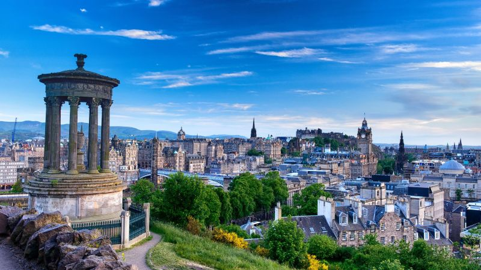
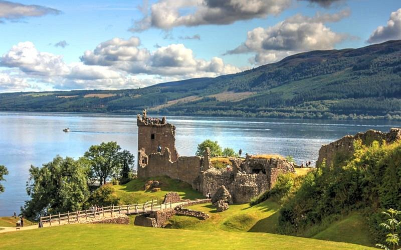

Sejarah

Scotland adalah salah satu negara yang menjadi bagian dari United Kingdom (UK) dan memiliki sejarah panjang
sejak zaman prasejarah. Wilayah ini pernah dihuni oleh masyarakat kuno, kemudian dipengaruhi oleh bangsa Romawi, Pict, dan Viking.
Pada abad pertengahan, Scotland mengalami berbagai konflik dengan Inggris dalam perjuangan mempertahankan kemerdekaannya.
Tokoh seperti William Wallace dan Robert the Bruce menjadi bagian penting dalam sejarah perjuangan tersebut.
Pada tahun 1707, melalui Act of Union, Scotland bergabung secara politik dengan England membentuk Kingdom of Great Britain.
Scotland kemudian berkembang menjadi pusat perdagangan, industri, pendidikan, ilmu pengetahuan, dan kebudayaan
Geografis

Scotland terletak di bagian utara Pulau Great Britain, di sebelah utara England. Negara ini memiliki wilayah yang sangat beragam,
mulai dari pegunungan, lembah, hutan, danau yang disebut loch, hingga pantai dan pulau-pulau. Scotland memiliki hampir 800 pulau,
termasuk kepulauan Orkney, Shetland, dan Hebrides. Bagian utaranya terkenal dengan kawasan Scottish Highlands, yang memiliki pegunungan dan pemandangan alam yang luas.
Scotland juga dikelilingi oleh beberapa perairan, seperti North Sea di sebelah timur serta Atlantic Ocean di utara dan barat.
Edinburgh merupakan ibu kota Scotland dan terkenal sebagai kota bersejarah dengan bangunan tua, kastil, serta berbagai festival. Glasgow merupakan kota terbesar di Scotland dan dikenal sebagai
pusat budaya, seni, perdagangan, dan hiburan. Selain itu, terdapat kota-kota lain seperti Aberdeen, Dundee, Inverness, Perth, dan Stirling yang memiliki karakter, sejarah, serta tempat menarik masing-masing.
Wisata
Skotlandia (Scotland) adalah salah satu negara yang menjadi bagian dari Britania Raya (United Kingdom). Negara ini terletak di bagian utara Pulau Britania Raya dan
terkenal sebagai destinasi wisata yang memiliki perpaduan antara keindahan alam, sejarah, budaya, dan arsitektur yang unik.
Salah satu daya tarik utama Skotlandia adalah pemandangan alamnya yang dramatis. Wilayah Scottish Highlands memiliki pegunungan, lembah, dan danau yang luas dengan suasana yang khas.
Beberapa tempat terkenal di kawasan ini adalah Loch Ness, Glencoe, dan Cairngorms National Park. Pemandangan tersebut membuat Skotlandia menjadi tujuan populer bagi wisatawan yang menyukai alam, hiking, fotografi, dan kegiatan luar ruangan.
Selain keindahan alam, Skotlandia juga memiliki banyak bangunan bersejarah, terutama kastel. Edinburgh Castle merupakan salah satu kastel paling terkenal dan menjadi simbol penting kota Edinburgh.
Kastel-kastel seperti Urquhart Castle juga menarik karena memiliki hubungan dengan sejarah Skotlandia dan berada di lokasi dengan pemandangan alam yang indah. Dengan kombinasi antara pegunungan yang indah, danau, kastel, kota bersejarah, serta budaya yang unik,
Skotlandia menjadi destinasi wisata yang menawarkan pengalaman beragam.
Urquhart Castle at Loch Ness

Loch Ness adalah sebuah danau besar yang berada di kawasan Scottish Highlands, dekat kota Inverness. Loch Ness merupakan salah satu tempat wisata paling terkenal di Skotlandia,
terutama karena legenda tentang Loch Ness Monster, yang sering disebut Nessie. Salah satu objek wisata penting di sekitar Loch Ness adalah Urquhart Castle, yaitu reruntuhan kastel bersejarah yang berada di tepi danau.
Tempat ini menarik karena pengunjung dapat menikmati pemandangan Loch Ness sekaligus mempelajari sejarah kawasan tersebut.
Cairngorms National Park

Cairngorms National Park merupakan taman nasional yang berada di kawasan tengah Scottish Highlands taman nasional terbesar di Britania Raya. Cairngorms terkenal karena memiliki kombinasi pegunungan, hutan, sungai, dan danau (loch).
Kawasan ini juga memiliki lima dari enam gunung tertinggi di Britania Raya dan sekitar 55 Munros, Taman nasional ini juga sangat penting bagi kehidupan satwa liar. Kawasannya menjadi habitat berbagai spesies dan memiliki sejumlah kawasan konservasi.
Pengunjung dapat melakukan hiking, bersepeda, mengamati satwa liar, menikmati pemandangan, dan mengikuti berbagai kegiatan outdoor.
Edinburgh Castle

Edinburgh Castle adalah benteng bersejarah yang berdiri di atas Castle Rock, sebuah bukit vulkanik di pusat kota Edinburgh, Skotlandia. Tempat ini merupakan salah satu landmark paling terkenal di Skotlandia.
Edinburgh Castle juga sangat terkait dengan identitas nasional Skotlandia. Dari kastel ini, pengunjung dapat melihat kawasan Old Town dan New Town Edinburgh yang bersama-sama merupakan Situs Warisan Dunia UNESCO.